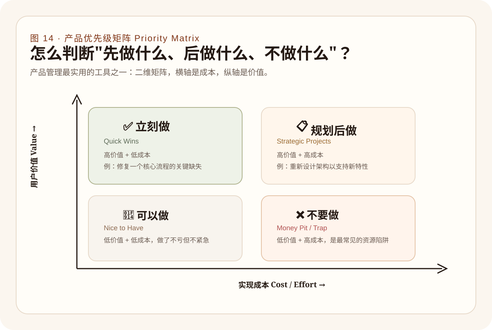

10
项目管理方法（Management Methods）：为什么做软件绝对容不下灵光乍现式只靠一时激情的随性拼装？
假如你建造这套承载灵魂和现实运作生命的工程图景只是单凭“今早起床时拍脑袋忽然灵光一现忽然觉得那边还需要加个特效面板按钮或表单输入框等零碎功能点”，且放任这头怪兽如脱缰野马毫无制约地野蛮生长。那么在不出两个星期后你所能换回的最确切结局只有一个：这套原本应该极度精密的体系被那些到处打补丁和零碎随性杂陈在不知名边角处的恶心功能毒瘤腐蚀得彻底瘫痪发软。它的管线错综连环相互倾轧拉扯纠结，以至于你不敢去碰它身体上的任何一处关节因为极可能会让它整个发生崩坏坠塌！
这就是为何只要做到了软件开发维度就绝对不允许失去管理极度深沉制约力控制的核心根本！
- 极刑断定优先级排布（Priority）： 世间万物事务在同一时刻绝无平起平坐价值。必须具备对哪些核心大骨架任务倾尽全部心力火力进行先期不计代价建设突围而敢于对其余锦上添花且无关痛痒细枝末节毫不心软手硬彻底砍除悬置挂起的铁血冷酷判决力量！
- 断代阶段性分期包干阵线划分（Phase）： 罗马建不成一天，你必须要把漫长战线切成不回头可复盘检验的小截。在每一个里程碑结算界点来审视究竟是否完成了核心战役阶段预定指标，决不容许没搞定基层桩基就开始铺设玻璃幕墙外立面那般越位冒进的虚荣行径！
- 死防火墙范围边际控制红圈（Scope）： 在既定目标执行包圈冲锋时，任何再美妙天才的附加发散创意哪怕再亮眼如果处于本阶线外都必须硬着心肠将他们无情拍死或者暂押于长久未来备忘冻结冰柜队列中。守住当期绝不蔓生外扩任务底线！
用主线（P1 ~ P5）来锚定演进生命阵线推进波次轮廓
这绝不是套用陈词滥调。我们可以直接剖析在 LifeOnline 这个真实大型修罗场般的联合认知体内，我们是如何通过一套无比严谨的 Px 大层级推进轴线来避免它中途跑散解体并在漫长长跑马拉松里将每个庞杂模块安放到位：
- 主轴 P1（核心治理面破笼骨络网建立）： 第一步什么都不图，就是把这层在往日处于彻底空白的
SoulAction核心运转台骨架先硬生生建立在虚空之上。让系统明白有这个池子在运转能够存东西可调配有状态在扭转流淌存在即可，先在后台把大腿最粗大腿骨敲实在了。 - 主轴 P2（全生命运行细节颗粒度丰满化）： 有了空置池底再来丰满每一点在状态切换流转中的细节打磨和诸如对于不同节点特殊判断边缘防撞补齐工作，也就是给骨架装填上饱满结实质密不会随便骨折断裂的厚实肉质纤维肌肉网络块层群！
- 主轴 P3（治理铁血协议正规官方体系落成）： 这步才是开始放行通过强严密具有严谨准确定位制裁力的管控网闸接口控制阀与对内对外交流通畅对接管线（Governance API）形成具有契约化能够正式投入大规模无差别高密并发使用的坚韧中台连接盘路。
- 主轴 P4（结果残留收纳沉底回流反刍重整机制链路编排）： 这事关在大量执行产生残垣断肢废料结果碎屑后系统怎么不会随之臃肿死亡的绝学，就是将这些外端产物吸收吞噬提纯去粗存菁将有用的高维价值结论给吃回循环血脉（Outcome Reintegration）再利用回环链路网的编织收口工作。
- 主轴 P5（最高端极性认知资产结晶永久提取加冕仪式晋升线）： 这是生命体长期永恒连续性火种积累（Continuity Promotion）高阶演替提存动作场链网建设！
极少即是极多的价值成本象限决断切割场
如果你手握无数看起来都美好必须要做的事宜不知如何下手破局，那么请立刻拉出这一张冷酷斩首图谱：也就是那传说中的由横纵坐标划分切出的不可越界的四块象限地域价值-成本矩阵。
- 对于处于【绝对高额巨量产出价值 + 低到令人发指成本】那个象限的区块，立刻现在马上下死力气突击拿下把它当做快速提升系统活力的救命灵丹（快速修复痛点破损口等）；
- 碰到虽然同样能带极好收益却【成本重磅昂贵耗费经年】的项目必须进行慎重统筹规划放在长期建设阵线图；
- 看到哪怕看起来简单却【毫无产值收益纯属好看无实绩】的所谓美化打杂项目绝对将其置之不管不问打入冷宫；
- 最惨绝人寰的是踩入那些既【无实质效能突破价值并且同时还需要庞大吞金兽般吞噬大量资源心血时间】的天坑，在认出来之时请立刻斩仓逃离！
本章小结
没有高密极强极冷酷无情斩断力去排布控制阶段边界和优先排期红线的任何工程团队和系统都注定走向那必定臃灭崩溃衰亡深渊死海末端之境。AI 可以帮你十倍百倍地疯狂增高扩建城墙，但这只会更凸显对于总体设计规划路线总指挥大脑统摄图鉴驾驭力度的渴求到达一种史无前例极致的恐怖境界高峰需求。
图 11
产品优先级管理极刑斩切矩阵（Priority Value-Cost Matrix）
